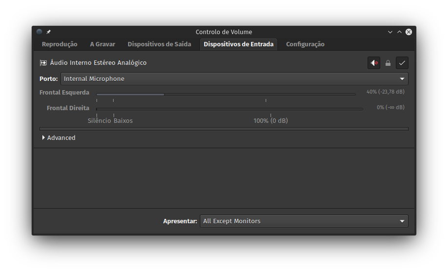

Quer no meu portátil, quer no da esposa, temos um problema irritante com o microfone de cada equipamento quando usamos o Jitsi Meet, Skype, Messenger e outras aplicações do género. A situação é a seguinte: quando o volume do micro está baixo, não se ouve nada; aumentando, só se ouve distorção que dá uma dor de cabeça horrível.
Andei uns dias de volta do alsa ou do pulseaudio, porque pensava que o problema era aí, até que descobri a solução no askubuntu. Resumidamente, basta instalar o pavucontrol, ir aos dispositivos de entrada, destrancar os canais do microfone interno e colocar o canal direito a 0.
A imagem abaixo exemplifica o que deve ser feito.

Agora, falta-me ver se dá para aplicar esta alteração system-wide, com a edição de algum ficheiro do pulseaudio.